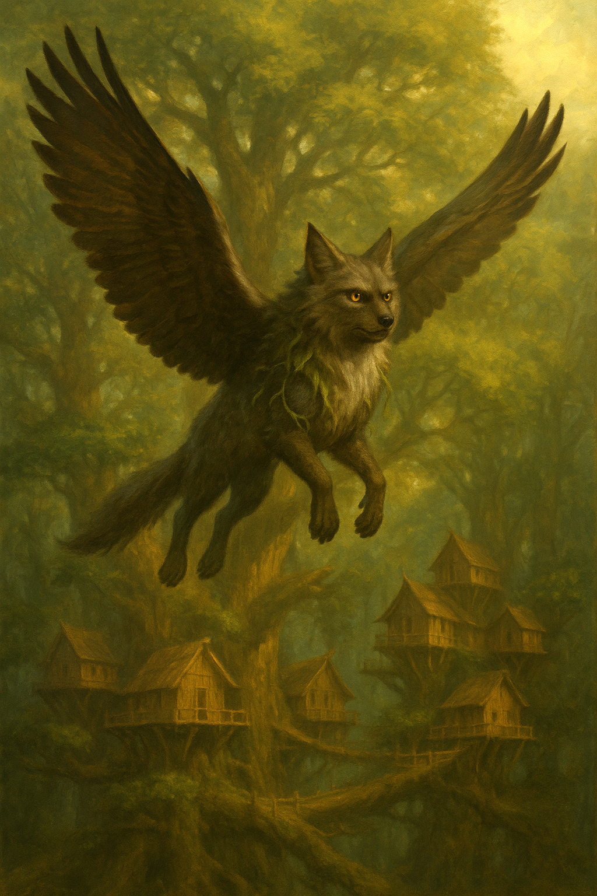

Commune

Aiglou
L’Aiglou est la créature idéale pour illustrer les croisements provoqués par l’homme. Il fait partie des tout premiers mélanges réalisés par la magie, fruit d’une expérience audacieuse entre un loup et un aigle.
De cette union improbable est née une créature puissante, au caractère proche de celui d’un chien : loyale, protectrice et capable de s’attacher profondément à son maître. Mais l’Aiglou ne se résume pas à ce tempérament fidèle. Ses capacités en font un allié redoutable. Sa vue perçante lui permet de distinguer une cible à plus de cinq kilomètres, avec une précision extraordinaire. Son flair, digne des plus grands prédateurs, est capable de traquer une piste sur des jours entiers. Et sa force physique, héritée du loup, fait de lui un combattant aussi agile qu’implacable.
L’Aiglou reste une réussite emblématique des croisements magiques : un mélange entre l’instinct sauvage, l’acuité céleste et la fidélité animale. On le retrouve d’ailleurs très souvent lors de la cérémonie des choix des élèves du Clan du Lien animal.